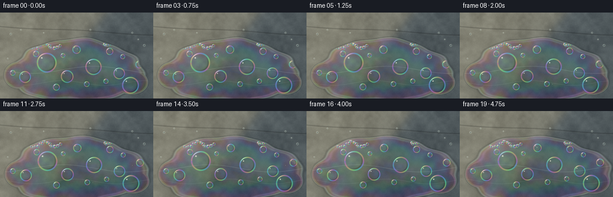
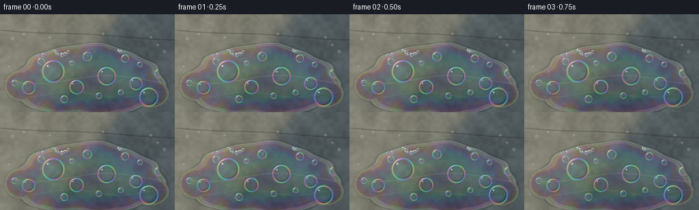

CODING AGENTS AS PIXEL WORLD MODELS
traex/GPT-5.6-Sol · phygen_085
点击播放 · 原生 RGB 像素
逐轮保存的候选
回放视频、检查图与代码变化。
每份候选均可单独播放。实际图片检查记录在下方工具轨迹中。
候选 01播放与检查图
点击播放 · 原生 RGB 像素


展开代码变化
--- 上一保存版本
+++ 本次保存版本
@@ -0,0 +1,220 @@
+from pathlib import Path
+import json, math
+import numpy as np
+from PIL import Image, ImageFilter
+import artifact_io
+
+# Procedural macro rendering of detergent film on a wet stone surface.
+# Everything is deterministic and generated from prompt text only.
+ROOT = Path(__file__).resolve().parent
+SPEC = json.loads((ROOT / "task_spec.json").read_text())
+W, H, N = SPEC["width"], SPEC["height"], SPEC["frames"]
+S = 2
+WW, HH = W*S, H*S
+rng = np.random.default_rng(85085)
+
+def smooth_noise(seed, small_w, small_h):
+ rr = np.random.default_rng(seed)
+ a = (rr.random((small_h, small_w))*255).astype(np.uint8)
+ im = Image.fromarray(a).resize((WW, HH), Image.Resampling.BICUBIC)
+ return np.asarray(im, dtype=np.float32)/255.0
+
+# Pixel centers in final-resolution coordinates, despite 2x supersampling.
+yy, xx = np.mgrid[0:HH, 0:WW].astype(np.float32)
+X = (xx + .5)/S
+Y = (yy + .5)/S
+coarse = smooth_noise(10, 13, 8)
+medium = smooth_noise(11, 47, 27)
+fine = smooth_noise(12, 160, 90)
+flow_noise = smooth_noise(13, 25, 15)
+
+# Rough charcoal slate, slightly green/blue like an outdoor paving stone.
+rock_v = (coarse-.5)*17 + (medium-.5)*10 + (fine-.5)*4
+base = np.zeros((HH, WW, 3), np.float32)
+base[:] = np.array([82, 88, 87], np.float32)
+base += rock_v[...,None] * np.array([1.00, 1.03, .98])
+# Warm diagonal patch of direct sunshine from upper left.
+sun_cut = 1.0/(1.0 + np.exp((X + .72*Y - 177.0)/5.5))
+sun_cut *= .92 + .08*np.sin(X*.027 + Y*.019)
+base += sun_cut[...,None] * np.array([47, 40, 27], np.float32)
+# Cool open-sky reflection in the shade.
+base += (1-sun_cut)[...,None] * np.array([-2, 1, 5], np.float32)
+# Natural stone striations.
+stri = np.sin(X*.115 + medium*1.2) + .45*np.sin(X*.037 + Y*.028)
+base += (stri*1.3)[...,None]
+# A shallow diagonal seam/crack beneath the wetness.
+seam_y = 23.5 + .055*X + 1.0*np.sin(X*.035)
+seam = np.exp(-((Y-seam_y)/1.15)**2)
+base *= (1 - .18*seam[...,None])
+base += np.exp(-((Y-seam_y-1.3)/.65)**2)[...,None]*np.array([8,8,7])
+
+# Static tiny wet patches on the surrounding stone.
+wet_streak = np.exp(-((Y-(123 + 4*np.sin(X*.027)))/9.0)**2) * (.25+.75*smooth_noise(91,18,10))
+base = base*(1-.08*wet_streak[...,None]) + np.array([45,58,61])* (.08*wet_streak[...,None])
+
+# Bubble layout: (x, y, radius, vx, vy, phase). Larger bubbles anchor the shot.
+bubbles = [
+ (78,84,15.5,.42,-.13,.2), (112,107,9.7,.25,-.24,1.1),
+ (156,91,12.6,.46,-.18,2.0), (199,102,8.8,.28,-.33,2.7),
+ (218,122,13.1,.35,-.25,3.4), (42,108,9.0,.48,-.11,4.1),
+ (128,62,6.2,.35,-.05,5.2), (183,65,5.3,.25,-.20,1.7),
+ (94,125,5.0,.18,-.30,2.5), (233,87,5.8,.25,-.18,4.7),
+ (60,69,4.5,.40,-.08,.8), (145,120,4.0,.32,-.22,3.8),
+ (21,101,4.0,.20,-.10,2.3), (177,115,3.6,.31,-.28,5.5),
+ (105,72,3.2,.23,-.18,2.9), (205,74,3.5,.27,-.18,4.2),
+]
+# Two strings of tiny foam pearls near the advancing edge.
+for k in range(21):
+ x = 47 + k*2.65 + rng.normal(0,.9)
+ y = 56 + 4.2*math.sin(k*.48) + rng.normal(0,.7)
+ r = rng.uniform(1.15,2.45)
+ bubbles.append((x,y,r,rng.uniform(.15,.38),rng.uniform(-.12,.03),rng.uniform(0,6.28)))
+for k in range(17):
+ x = 172 + k*2.55 + rng.normal(0,1.0)
+ y = 52 + .115*(x-172) + 3*math.sin(k*.62) + rng.normal(0,.75)
+ r = rng.uniform(.9,2.25)
+ bubbles.append((x,y,r,rng.uniform(.15,.35),rng.uniform(-.08,.08),rng.uniform(0,6.28)))
+
+# Small beads outside the principal soap layer reinforce that the stone is wet.
+water_beads = [(18,36,1.7),(35,29,1.15),(221,34,1.4),(241,55,1.9),
+ (13,77,1.1),(151,29,1.25),(73,34,1.0),(231,45,1.0)]
+
+def blend(arr, color, alpha, sl=None):
+ if sl is None:
+ arr[:] = arr*(1-alpha[...,None]) + color*alpha[...,None]
+ else:
+ arr[sl] = arr[sl]*(1-alpha[...,None]) + color*alpha[...,None]
+
+def render_bubble(img, cx, cy, r, t, phase, liquid_mask):
+ # Soft, physically suggestive soap bubble: refractive interior, dark meniscus,
+ # rainbow rim, bright sun-side arc and a tiny moving glint.
+ pad = r + 3.5
+ x0=max(0,int((cx-pad)*S)); x1=min(WW,int((cx+pad)*S)+1)
+ y0=max(0,int((cy-pad)*S)); y1=min(HH,int((cy+pad)*S)+1)
+ if x1<=x0 or y1<=y0: return
+ xs=X[y0:y1,x0:x1]; ys=Y[y0:y1,x0:x1]
+ dx=xs-cx; dy=ys-cy
+ q=np.sqrt(dx*dx+dy*dy)+1e-5
+ a=np.arctan2(dy,dx)
+ local=liquid_mask[y0:y1,x0:x1]
+ disk=np.clip((r+.45-q)/.8,0,1)*local
+ # Clear interior catches cool reflected sky and magnifies the underlying surface.
+ interior=np.clip((r-q)/(max(r*.72,1)),0,1)*.14*disk
+ region=img[y0:y1,x0:x1]
+ region[:] = region*(1-interior[...,None]) + np.array([116,145,149])*interior[...,None]
+ # Dark lower-right meniscus gives a convex transparent volume.
+ darkarc=np.exp(-((q-r*.88)/(max(.65,r*.10)))**2) * np.clip(np.cos(a-.72),0,1)*.25*local
+ region[:] *= (1-darkarc[...,None])
+ # Thin-film rim has angle-dependent cyan / magenta / gold.
+ rim=np.exp(-((q-r)/(.48 + .04*r))**2)*local
+ hue=phase + 2.2*a + .55*t
+ rimcol=np.stack([154+72*np.sin(hue), 176+63*np.sin(hue+2.08), 182+65*np.sin(hue+4.16)],axis=-1)
+ ra=np.clip(rim*.66,0,.78)
+ region[:] = region*(1-ra[...,None]) + rimcol*ra[...,None]
+ # Strong white arc where upper-left sunlight strikes the curved rim.
+ angle_delta=np.angle(np.exp(1j*(a+2.18)))
+ hiarc=np.exp(-(angle_delta/.48)**2)*np.exp(-((q-r)/(.56))**2)*local
+ hiarc*= .72 + .18*math.sin(t*2.0+phase)
+ region[:] = region*(1-hiarc[...,None]) + np.array([255,247,214])*hiarc[...,None]
+ # Point glint sits just inside the upper-left rim.
+ gx=cx-r*.53; gy=cy-r*.52
+ g=np.exp(-(((xs-gx)/max(.38,r*.075))**2+((ys-gy)/max(.38,r*.075))**2))*local
+ ga=np.clip(g*.95,0,.95)
+ region[:] = region*(1-ga[...,None]) + np.array([255,252,232])*ga[...,None]
+
+
+def render_frame(fi):
+ t = fi / SPEC["fps"]
+ img = base.copy()
+
+ # The detergent puddle slowly creeps downslope and its perimeter breathes.
+ cx = 129.0 + .35*t
+ cy = 98.0 + .22*t
+ dx=(X-cx)/(112.0 + 1.25*t)
+ dy=(Y-cy)/(51.5 + .75*t)
+ theta=np.arctan2(dy,dx)
+ rr=np.sqrt(dx*dx+dy*dy)
+ wav=(.050*np.sin(3*theta+.22*t) + .026*np.sin(7*theta-1.1-.17*t)
+ +.014*np.sin(13*theta+1.4+.31*t))
+ # Slight flow tongues at lower-right and left edges.
+ phi = 1.0 + wav - rr
+ lobe1 = 1-np.sqrt(((X-(220+.7*t))/27)**2+((Y-(117+.25*t))/20)**2)
+ lobe2 = 1-np.sqrt(((X-(31+.5*t))/24)**2+((Y-(105+.15*t))/22)**2)
+ phi=np.maximum(phi,np.maximum(lobe1*.72,lobe2*.66))
+ mask=np.clip(.5+phi/.026,0,1)
+ edge=np.exp(-(phi/.019)**2)
+
+ # Clear liquid darkens stone and reflects cool blue sky.
+ thickness=np.clip(phi,0,.45)/.45
+ film_col = img*.69 + np.array([35,65,71],np.float32)*.31
+ film_col += (flow_noise-.5)[...,None]*np.array([9,12,13])
+ a=.68*mask
+ img = img*(1-a[...,None]) + film_col*a[...,None]
+
+ # Thin-film interference: subtle broad bands, strongest in thin areas.
+ phase=(8.5*phi + 2.1*flow_noise + .25*np.sin(X*.035+Y*.018) + .12*t)
+ ir=np.stack([np.sin(phase),np.sin(phase+2.094),np.sin(phase+4.188)],axis=-1)
+ ir_strength=(7.0 + 9.0*(1-thickness))*mask
+ img += ir*ir_strength[...,None]
+ # A secondary oil-slick ribbon along the perimeter.
+ inner_ring=np.exp(-((phi-.053)/.027)**2)*mask
+ ringcol=np.stack([198+42*np.sin(theta*2+.35*t),
+ 205+35*np.sin(theta*2+.35*t+2.1),
+ 212+38*np.sin(theta*2+.35*t+4.2)],axis=-1)
+ img=img*(1-(inner_ring*.19)[...,None])+ringcol*(inner_ring*.19)[...,None]
+
+ # Sun and sky reflections only on the smooth detergent layer.
+ sky_ref=np.exp(-(((X-178)/65)**2+((Y-82)/36)**2))*.24*mask*(1-sun_cut*.28)
+ img=img*(1-sky_ref[...,None])+np.array([131,169,175])*sky_ref[...,None]
+ sun_ref=np.exp(-(((X-61)/38)**2+((Y-59)/15)**2))*.18*mask*sun_cut
+ img=img*(1-sun_ref[...,None])+np.array([250,226,168])*sun_ref[...,None]
+
+ # Bright wet contact line and darker outer meniscus.
+ img=img*(1-(edge*.27)[...,None])+np.array([202,226,217])*(edge*.27)[...,None]
+ outer=np.exp(-((phi+.024)/.020)**2)
+ img*=1-(outer*.16)[...,None]
+
+ # Fine current/caustic traces slide slowly through the film.
+ trace_center=96 + 6*np.sin(X*.030 + .55*t)
+ trace=np.exp(-((Y-trace_center)/.48)**2)*mask*.16
+ trace += np.exp(-((Y-(118+4*np.sin(X*.045-.33*t)))/.42)**2)*mask*.10
+ img=img*(1-trace[...,None])+np.array([210,232,219])*trace[...,None]
+
+ # Render soap bubbles with coherent slow advection.
+ for bx,by,br,vx,vy,p in bubbles:
+ wob=.18*math.sin(t*.75+p)
+ px=bx+vx*t + wob
+ py=by+vy*t + .12*math.sin(t*.62+p*1.3)
+ render_bubble(img,px,py,br,t,p,mask)
+
+ # Outside water beads, static but their sun glints fluctuate naturally.
+ for j,(bx,by,br) in enumerate(water_beads):
+ pad=br+2; x0=max(0,int((bx-pad)*S));x1=min(WW,int((bx+pad)*S)+1)
+ y0=max(0,int((by-pad)*S));y1=min(HH,int((by+pad)*S)+1)
+ xs=X[y0:y1,x0:x1];ys=Y[y0:y1,x0:x1]
+ q=np.sqrt((xs-bx)**2+(ys-by)**2)
+ bead=np.clip((br-q)/.45,0,1)
+ reg=img[y0:y1,x0:x1]
+ reg[:]=reg*(1-(bead*.25)[...,None])+np.array([105,132,132])*(bead*.25)[...,None]
+ rim=np.exp(-((q-br)/.28)**2)*.5
+ reg[:]=reg*(1-rim[...,None])+np.array([225,230,210])*rim[...,None]
+ gl=np.exp(-(((xs-(bx-br*.35))/.28)**2+((ys-(by-br*.4))/.28)**2))
+ reg[:]=reg*(1-gl[...,None])+255*gl[...,None]
+
+ # A few pinprick sparkles on the wet film, appearing and fading smoothly.
+ sparks=[(70,56,0.2),(129,61,1.4),(181,53,2.5),(221,91,3.6),(155,120,4.7)]
+ for sx,sy,sp in sparks:
+ amp=max(0,math.sin(t*1.35+sp))**7
+ g=np.exp(-(((X-sx)/.42)**2+((Y-sy)/.42)**2))*amp*mask
+ img=img*(1-g[...,None])+np.array([255,250,222])*g[...,None]
+
+ # Gentle optical bloom in the brightest sunlight.
+ out=np.clip(img,0,255).astype(np.uint8)
+ pil=Image.fromarray(out,"RGB")
+ # Downsample supersampled render for clean subpixel bubble rims.
+ pil=pil.resize((W,H),Image.Resampling.LANCZOS)
+ return np.asarray(pil,dtype=np.uint8)
+
+frames=np.stack([render_frame(i) for i in range(N)],axis=0)
+artifact_io.save(frames, ROOT)
+print(f"saved {frames.shape} {frames.dtype}; range {frames.min()}..{frames.max()}")
可观测工具轨迹
实际执行的命令与返回图片。
命令 1exit 0
/bin/bash -lc "cat prompt.txt && printf '\\n--- GENERATION_RULES ---\\n' && cat GENERATION_RULES.md && printf '\\n--- TASK_SPEC ---\\n' && cat task_spec.json"
命令 2exit 0
/bin/bash -lc "find . -maxdepth 2 -type f -printf '%p\\n' | sort && printf '\\nTOOLS\\n' && command -v ffmpeg || true && command -v blender || true && command -v python3 || true"
命令 3exit 0
/bin/bash -lc 'cat artifact_io.py'
命令 4exit 0
/bin/bash -lc "cat > generate.py <<'PY'
from pathlib import Path
import json, math
import numpy as np
from PIL import Image, ImageFilter
import artifact_io
# Procedural macro rendering of detergent film on a wet stone surface.
# Everything is deterministic and generated from prompt text only.
ROOT = Path(__file__).resolve().parent
SPEC = json.loads((ROOT / \"task_spec.json\").read_text())
W, H, N = SPEC[\"width\"], SPEC[\"height\"], SPEC[\"frames\"]
S = 2
WW, HH = W*S, H*S
rng = np.random.default_rng(85085)
def smooth_noise(seed, small_w, small_h):
rr = np.random.default_rng(seed)
a = (rr.random((small_h, small_w))*255).astype(np.uint8)
im = Image.fromarray(a).resize((WW, HH), Image.Resampling.BICUBIC)
return np.asarray(im, dtype=np.float32)/255.0
# Pixel centers in final-resolution coordinates, despite 2x supersampling.
yy, xx = np.mgrid[0:HH, 0:WW].astype(np.float32)
X = (xx + .5)/S
Y = (yy + .5)/S
coarse = smooth_noise(10, 13, 8)
medium = smooth_noise(11, 47, 27)
fine = smooth_noise(12, 160, 90)
flow_noise = smooth_noise(13, 25, 15)
# Rough charcoal slate, slightly green/blue like an outdoor paving stone.
rock_v = (coarse-.5)*17 + (medium-.5)*10 + (fine-.5)*4
base = np.zeros((HH, WW, 3), np.float32)
base[:] = np.array([82, 88, 87], np.float32)
base += rock_v[...,None] * np.array([1.00, 1.03, .98])
# Warm diagonal patch of direct sunshine from upper left.
sun_cut = 1.0/(1.0 + np.exp((X + .72*Y - 177.0)/5.5))
sun_cut *= .92 + .08*np.sin(X*.027 + Y*.019)
base += sun_cut[...,None] * np.array([47, 40, 27], np.float32)
# Cool open-sky reflection in the shade.
base += (1-sun_cut)[...,None] * np.array([-2, 1, 5], np.float32)
# Natural stone striations.
stri = np.sin(X*.115 + medium*1.2) + .45*np.sin(X*.037 + Y*.028)
base += (stri*1.3)[...,None]
# A shallow diagonal seam/crack beneath the wetness.
seam_y = 23.5 + .055*X + 1.0*np.sin(X*.035)
seam = np.exp(-((Y-seam_y)/1.15)**2)
base *= (1 - .18*seam[...,None])
base += np.exp(-((Y-seam_y-1.3)/.65)**2)[...,None]*np.array([8,8,7])
# Static tiny wet patches on the surrounding stone.
wet_streak = np.exp(-((Y-(123 + 4*np.sin(X*.027)))/9.0)**2) * (.25+.75*smooth_noise(91,18,10))
base = base*(1-.08*wet_streak[...,None]) + np.array([45,58,61])* (.08*wet_streak[...,None])
# Bubble layout: (x, y, radius, vx, vy, phase). Larger bubbles anchor the shot.
bubbles = [
(78,84,15.5,.42,-.13,.2), (112,107,9.7,.25,-.24,1.1),
(156,91,12.6,.46,-.18,2.0), (199,102,8.8,.28,-.33,2.7),
(218,122,13.1,.35,-.25,3.4), (42,108,9.0,.48,-.11,4.1),
(128,62,6.2,.35,-.05,5.2), (183,65,5.3,.25,-.20,1.7),
(94,125,5.0,.18,-.30,2.5), (233,87,5.8,.25,-.18,4.7),
(60,69,4.5,.40,-.08,.8), (145,120,4.0,.32,-.22,3.8),
(21,101,4.0,.20,-.10,2.3), (177,115,3.6,.31,-.28,5.5),
(105,72,3.2,.23,-.18,2.9), (205,74,3.5,.27,-.18,4.2),
]
# Two strings of tiny foam pearls near the advancing edge.
for k in range(21):
x = 47 + k*2.65 + rng.normal(0,.9)
y = 56 + 4.2*math.sin(k*.48) + rng.normal(0,.7)
r = rng.uniform(1.15,2.45)
bubbles.append((x,y,r,rng.uniform(.15,.38),rng.uniform(-.12,.03),rng.uniform(0,6.28)))
for k in range(17):
x = 172 + k*2.55 + rng.normal(0,1.0)
y = 52 + .115*(x-172) + 3*math.sin(k*.62) + rng.normal(0,.75)
r = rng.uniform(.9,2.25)
bubbles.append((x,y,r,rng.uniform(.15,.35),rng.uniform(-.08,.08),rng.uniform(0,6.28)))
# Small beads outside the principal soap layer reinforce that the stone is wet.
water_beads = [(18,36,1.7),(35,29,1.15),(221,34,1.4),(241,55,1.9),
(13,77,1.1),(151,29,1.25),(73,34,1.0),(231,45,1.0)]
def blend(arr, color, alpha, sl=None):
if sl is None:
arr[:] = arr*(1-alpha[...,None]) + color*alpha[...,None]
else:
arr[sl] = arr[sl]*(1-alpha[...,None]) + color*alpha[...,None]
def render_bubble(img, cx, cy, r, t, phase, liquid_mask):
# Soft, physically suggestive soap bubble: refractive interior, dark meniscus,
# rainbow rim, bright sun-side arc and a tiny moving glint.
pad = r + 3.5
x0=max(0,int((cx-pad)*S)); x1=min(WW,int((cx+pad)*S)+1)
y0=max(0,int((cy-pad)*S)); y1=min(HH,int((cy+pad)*S)+1)
if x1<=x0 or y1<=y0: return
xs=X[y0:y1,x0:x1]; ys=Y[y0:y1,x0:x1]
dx=xs-cx; dy=ys-cy
q=np.sqrt(dx*dx+dy*dy)+1e-5
a=np.arctan2(dy,dx)
local=liquid_mask[y0:y1,x0:x1]
disk=np.clip((r+.45-q)/.8,0,1)*local
# Clear interior catches cool reflected sky and magnifies the underlying surface.
interior=np.clip((r-q)/(max(r*.72,1)),0,1)*.14*disk
region=img[y0:y1,x0:x1]
region[:] = region*(1-interior[...,None]) + np.array([116,145,149])*interior[...,None]
# Dark lower-right meniscus gives a convex transparent volume.
darkarc=np.exp(-((q-r*.88)/(max(.65,r*.10)))**2) * np.clip(np.cos(a-.72),0,1)*.25*local
region[:] *= (1-darkarc[...,None])
# Thin-film rim has angle-dependent cyan / magenta / gold.
rim=np.exp(-((q-r)/(.48 + .04*r))**2)*local
hue=phase + 2.2*a + .55*t
rimcol=np.stack([154+72*np.sin(hue), 176+63*np.sin(hue+2.08), 182+65*np.sin(hue+4.16)],axis=-1)
ra=np.clip(rim*.66,0,.78)
region[:] = region*(1-ra[...,None]) + rimcol*ra[...,None]
# Strong white arc where upper-left sunlight strikes the curved rim.
angle_delta=np.angle(np.exp(1j*(a+2.18)))
hiarc=np.exp(-(angle_delta/.48)**2)*np.exp(-((q-r)/(.56))**2)*local
hiarc*= .72 + .18*math.sin(t*2.0+phase)
region[:] = region*(1-hiarc[...,None]) + np.array([255,247,214])*hiarc[...,None]
# Point glint sits just inside the upper-left rim.
gx=cx-r*.53; gy=cy-r*.52
g=np.exp(-(((xs-gx)/max(.38,r*.075))**2+((ys-gy)/max(.38,r*.075))**2))*local
ga=np.clip(g*.95,0,.95)
region[:] = region*(1-ga[...,None]) + np.array([255,252,232])*ga[...,None]
def render_frame(fi):
t = fi / SPEC[\"fps\"]
img = base.copy()
# The detergent puddle slowly creeps downslope and its perimeter breathes.
cx = 129.0 + .35*t
cy = 98.0 + .22*t
dx=(X-cx)/(112.0 + 1.25*t)
dy=(Y-cy)/(51.5 + .75*t)
theta=np.arctan2(dy,dx)
rr=np.sqrt(dx*dx+dy*dy)
wav=(.050*np.sin(3*theta+.22*t) + .026*np.sin(7*theta-1.1-.17*t)
+.014*np.sin(13*theta+1.4+.31*t))
# Slight flow tongues at lower-right and left edges.
phi = 1.0 + wav - rr
lobe1 = 1-np.sqrt(((X-(220+.7*t))/27)**2+((Y-(117+.25*t))/20)**2)
lobe2 = 1-np.sqrt(((X-(31+.5*t))/24)**2+((Y-(105+.15*t))/22)**2)
phi=np.maximum(phi,np.maximum(lobe1*.72,lobe2*.66))
mask=np.clip(.5+phi/.026,0,1)
edge=np.exp(-(phi/.019)**2)
# Clear liquid darkens stone and reflects cool blue sky.
thickness=np.clip(phi,0,.45)/.45
film_col = img*.69 + np.array([35,65,71],np.float32)*.31
film_col += (flow_noise-.5)[...,None]*np.array([9,12,13])
a=.68*mask
img = img*(1-a[...,None]) + film_col*a[...,None]
# Thin-film interference: subtle broad bands, strongest in thin areas.
phase=(8.5*phi + 2.1*flow_noise + .25*np.sin(X*.035+Y*.018) + .12*t)
ir=np.stack([np.sin(phase),np.sin(phase+2.094),np.sin(phase+4.188)],axis=-1)
ir_strength=(7.0 + 9.0*(1-thickness))*mask
img += ir*ir_strength[...,None]
# A secondary oil-slick ribbon along the perimeter.
inner_ring=np.exp(-((phi-.053)/.027)**2)*mask
ringcol=np.stack([198+42*np.sin(theta*2+.35*t),
205+35*np.sin(theta*2+.35*t+2.1),
212+38*np.sin(theta*2+.35*t+4.2)],axis=-1)
img=img*(1-(inner_ring*.19)[...,None])+ringcol*(inner_ring*.19)[...,None]
# Sun and sky reflections only on the smooth detergent layer.
sky_ref=np.exp(-(((X-178)/65)**2+((Y-82)/36)**2))*.24*mask*(1-sun_cut*.28)
img=img*(1-sky_ref[...,None])+np.array([131,169,175])*sky_ref[...,None]
sun_ref=np.exp(-(((X-61)/38)**2+((Y-59)/15)**2))*.18*mask*sun_cut
img=img*(1-sun_ref[...,None])+np.array([250,226,168])*sun_ref[...,None]
# Bright wet contact line and darker outer meniscus.
img=img*(1-(edge*.27)[...,None])+np.array([202,226,217])*(edge*.27)[...,None]
outer=np.exp(-((phi+.024)/.020)**2)
img*=1-(outer*.16)[...,None]
# Fine current/caustic traces slide slowly through the film.
trace_center=96 + 6*np.sin(X*.030 + .55*t)
trace=np.exp(-((Y-trace_center)/.48)**2)*mask*.16
trace += np.exp(-((Y-(118+4*np.sin(X*.045-.33*t)))/.42)**2)*mask*.10
img=img*(1-trace[...,None])+np.array([210,232,219])*trace[...,None]
# Render soap bubbles with coherent slow advection.
for bx,by,br,vx,vy,p in bubbles:
wob=.18*math.sin(t*.75+p)
px=bx+vx*t + wob
py=by+vy*t + .12*math.sin(t*.62+p*1.3)
render_bubble(img,px,py,br,t,p,mask)
# Outside water beads, static but their sun glints fluctuate naturally.
for j,(bx,by,br) in enumerate(water_beads):
pad=br+2; x0=max(0,int((bx-pad)*S));x1=min(WW,int((bx+pad)*S)+1)
y0=max(0,int((by-pad)*S));y1=min(HH,int((by+pad)*S)+1)
xs=X[y0:y1,x0:x1];ys=Y[y0:y1,x0:x1]
q=np.sqrt((xs-bx)**2+(ys-by)**2)
bead=np.clip((br-q)/.45,0,1)
reg=img[y0:y1,x0:x1]
reg[:]=reg*(1-(bead*.25)[...,None])+np.array([105,132,132])*(bead*.25)[...,None]
rim=np.exp(-((q-br)/.28)**2)*.5
reg[:]=reg*(1-rim[...,None])+np.array([225,230,210])*rim[...,None]
gl=np.exp(-(((xs-(bx-br*.35))/.28)**2+((ys-(by-br*.4))/.28)**2))
reg[:]=reg*(1-gl[...,None])+255*gl[...,None]
# A few pinprick sparkles on the wet film, appearing and fading smoothly.
sparks=[(70,56,0.2),(129,61,1.4),(181,53,2.5),(221,91,3.6),(155,120,4.7)]
for sx,sy,sp in sparks:
amp=max(0,math.sin(t*1.35+sp))**7
g=np.exp(-(((X-sx)/.42)**2+((Y-sy)/.42)**2))*amp*mask
img=img*(1-g[...,None])+np.array([255,250,222])*g[...,None]
# Gentle optical bloom in the brightest sunlight.
out=np.clip(img,0,255).astype(np.uint8)
pil=Image.fromarray(out,\"RGB\")
# Downsample supersampled render for clean subpixel bubble rims.
pil=pil.resize((W,H),Image.Resampling.LANCZOS)
return np.asarray(pil,dtype=np.uint8)
frames=np.stack([render_frame(i) for i in range(N)],axis=0)
artifact_io.save(frames, ROOT)
print(f\"saved {frames.shape} {frames.dtype}; range {frames.min()}..{frames.max()}\")
PY
python3 generate.py
ls -lh pixels.npz inspection.png transition_check.png index.html frames/00.png frames/19.png"命令 5exit 0
/bin/bash -lc 'python3 -m py_compile generate.py artifact_io.py && test -s index.html && test -s inspection.png && test $(find frames -name '"'*.png' | wc -l) -eq 20 && echo 'runnable and artifact set complete'"
命令 6exit 0
/bin/bash -lc "python3 - <<'PY'
import numpy as np, json
from PIL import Image
z=np.load('pixels.npz')['pixels']
s=json.load(open('task_spec.json'))
assert z.shape==(s['height'],s['width'],s['frames'])
assert z.dtype==np.uint32
fs=[]
for i in range(s['frames']):
a=np.array(Image.open(f'frames/{i:02d}.png'))
assert a.shape==(s['height'],s['width'],3) and a.dtype==np.uint8
p=(a[:,:,0].astype('u4')<<16)|(a[:,:,1].astype('u4')<<8)|a[:,:,2]
assert np.array_equal(p,z[:,:,i])
fs.append(a.astype(float))
fs=np.stack(fs)
d=np.abs(np.diff(fs,axis=0))
print('validated shape/dtype/packed pixels')
print('per-channel mean:',fs.mean((0,1,2)).round(2))
print('luma range:', (fs@np.array([.2126,.7152,.0722])).min().round(2), (fs@np.array([.2126,.7152,.0722])).max().round(2))
print('adjacent mean abs diff:',d.mean((1,2,3)).round(3).tolist())
print('changed pixels/frame:',(np.any(d>0,axis=3).sum((1,2))).tolist())
print('first-last MAD:',np.abs(fs[-1]-fs[0]).mean().round(3))
PY"保存候选 1 份；完成命令 6 次；可验证图片返回 0 张。原始 API 响应与完整日志保留在本地。